Hats
Originally created to protect your head from the environment.
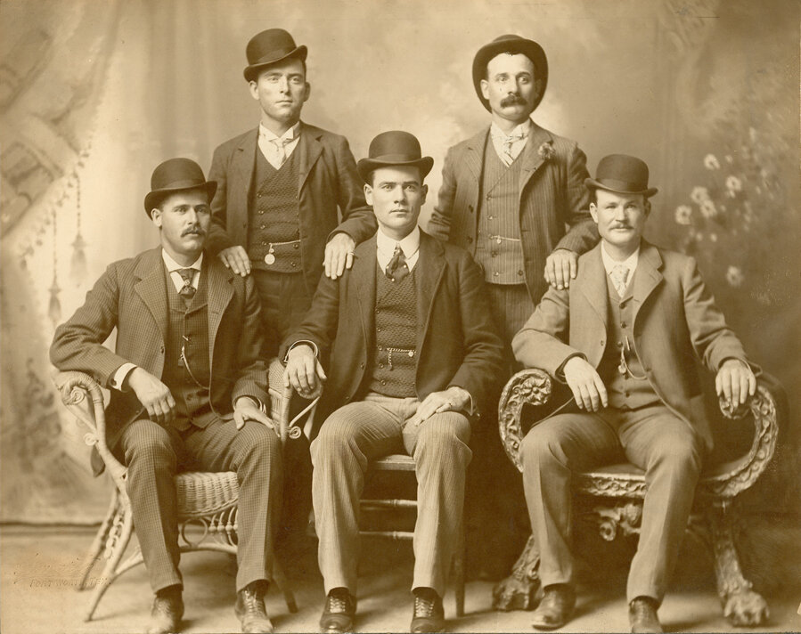Shoes
The first known pair of shoes were made of tree bark.
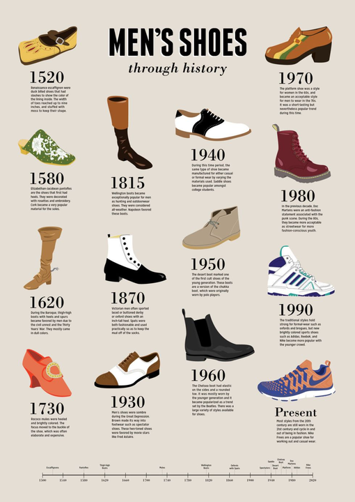Glasses/Sunglasses
The first glasses were made of wood, horn, and tortoiseshell.
Underwear
The earliest underwear was loincloth that went between the legs and fastened around the waist.
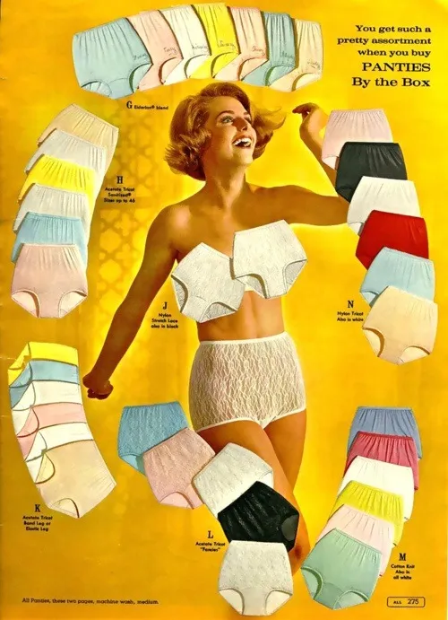Bras/Corsets
Corsets are the predecessors of the modern bra and were originally made of wood, metal or whalebone.
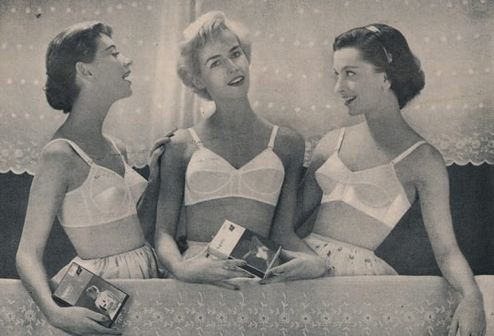Leggings
Leggings were originally two separate garments instead of the modern one piece.
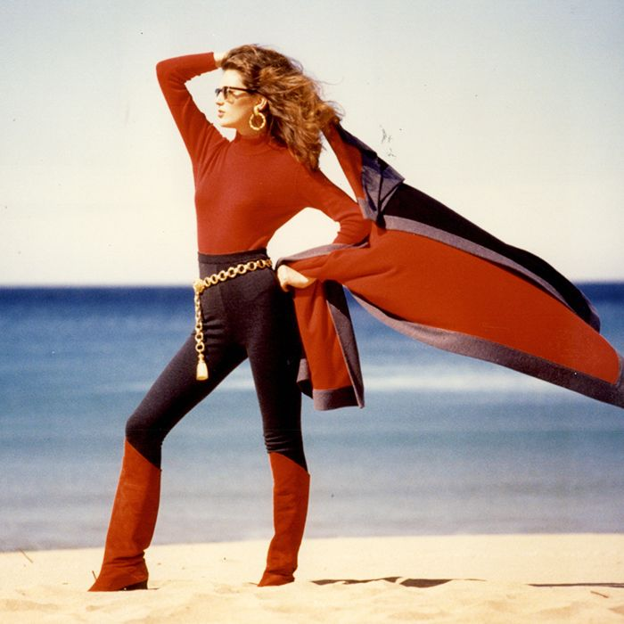Ties
Its origins come from military use to represent rank.
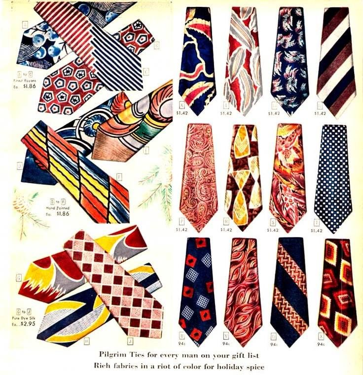Jeans
Invented for tough environments and longevity purposes.
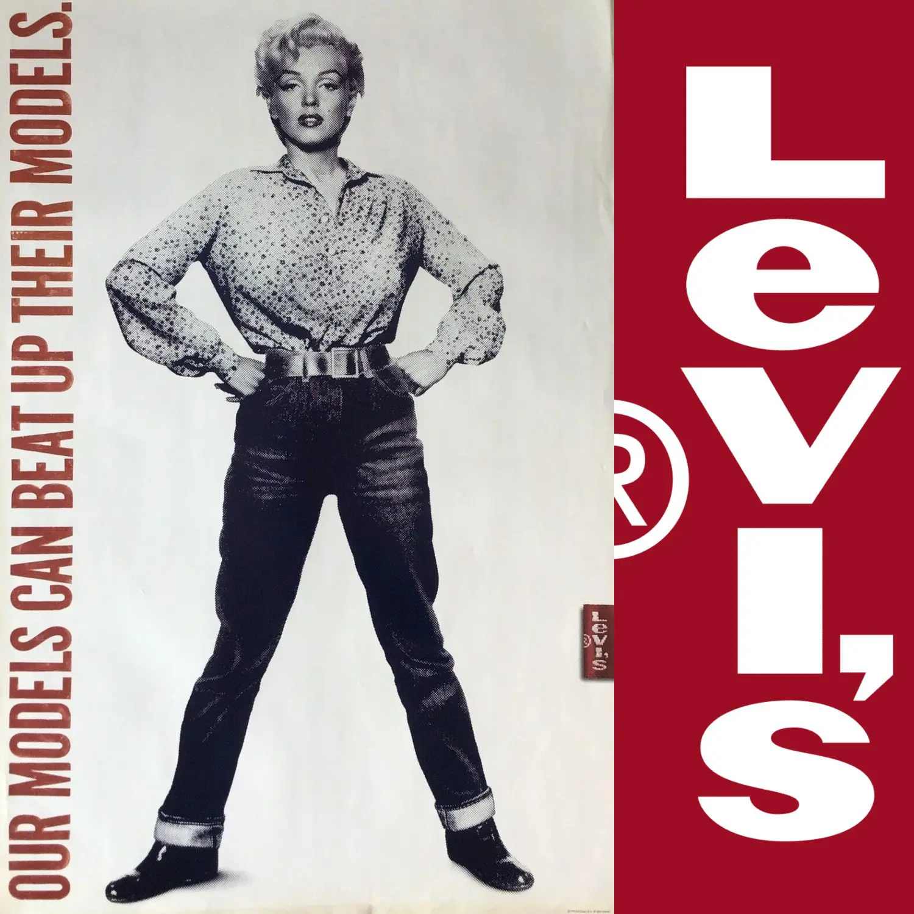Tunics
Extremely popular in ancient Rome and worn by both men and women.
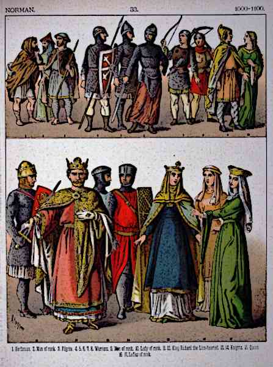Blue jeans, Cargos
Are known as vaqueros("cowboys") or tejanos("Texans") in Spain.
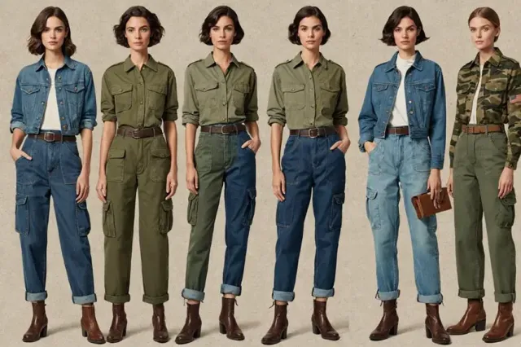Swimsuits
The modern bikini was invented by an auto engineer-turned fashion designer.
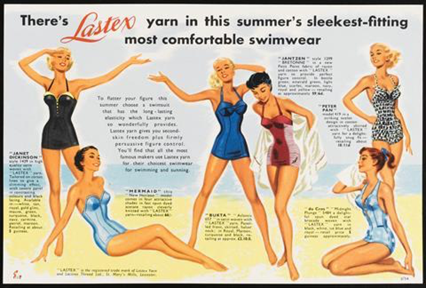Men's Blazer
Gained the name blazer from the original one being bright red(blazing color).
T-shirts
First marketed as being "bachelor undershirts".
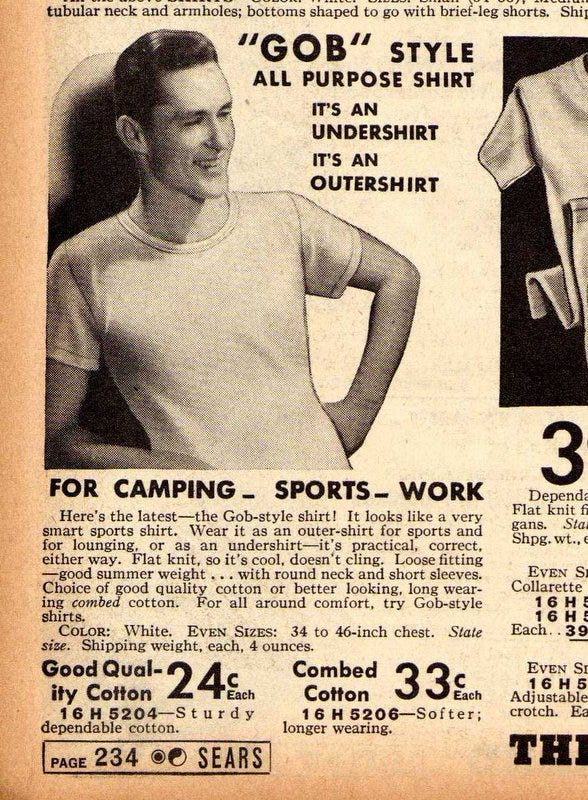Hawaiian Shirts
First made from breathable kimono fabric.
Workout Clothes (Stretchy)
Made for sports/exercise and later created fashion like athleisure.
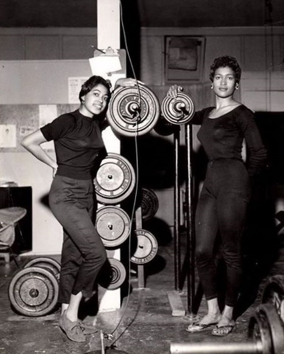